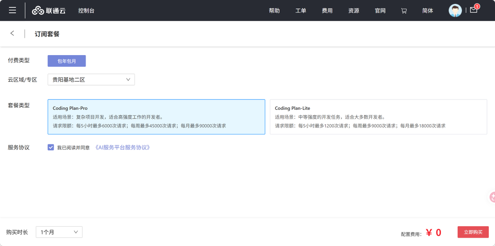
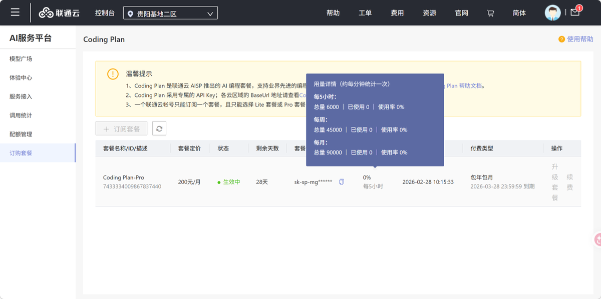
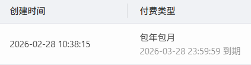

联通云免费一个月Coding Plan，12000个名额，支持GLM-5、MiniMax-M2.5等
活动链接：https://t.co/2HbZzO93UG（无AFF）
非联通号码也能注册，需要实名
目前都是0元，我买了Pro，要选到贵阳二区。新用户还有免费1个月服务器，在购买链接同一个页面上，早上还挺快的，现在估计被挤爆了。
用起来bug很多，GLM5半天吐不出字或者报429，MinimaxM2.5很慢勉强能用，使用体验拉垮，要不要薅看着办😴
最无语的是联通这个时间计算, 直接月份+1这样来的，2月买的比其他月份直接少了2-3天…

活动链接：https://t.co/2HbZzO93UG（无AFF）
非联通号码也能注册，需要实名
目前都是0元，我买了Pro，要选到贵阳二区。新用户还有免费1个月服务器，在购买链接同一个页面上，早上还挺快的，现在估计被挤爆了。
用起来bug很多，GLM5半天吐不出字或者报429，MinimaxM2.5很慢勉强能用，使用体验拉垮，要不要薅看着办😴
最无语的是联通这个时间计算, 直接月份+1这样来的，2月买的比其他月份直接少了2-3天…



看到联通元景30天不限tokens调用GLM-5大模型，已经在幻想未来充token会不会像在充话费了🤭
希望运营商们都努努力，多弄点不限量、不降智、老百姓用得起的API，感觉说不定以后token就像蜂窝流量一样，不是一个离生活很远的技术名词~ https://t.co/CVLwI3s0ti
希望运营商们都努努力，多弄点不限量、不降智、老百姓用得起的API，感觉说不定以后token就像蜂窝流量一样，不是一个离生活很远的技术名词~ https://t.co/CVLwI3s0ti